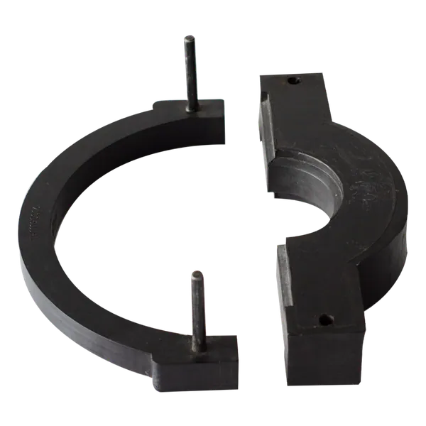
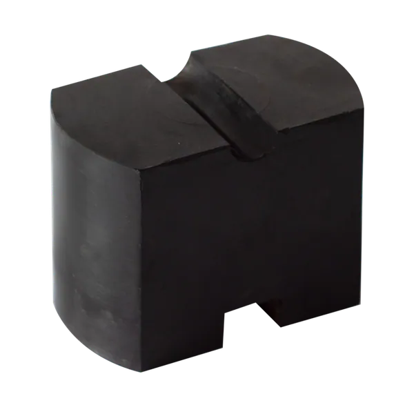
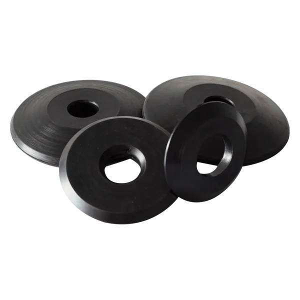
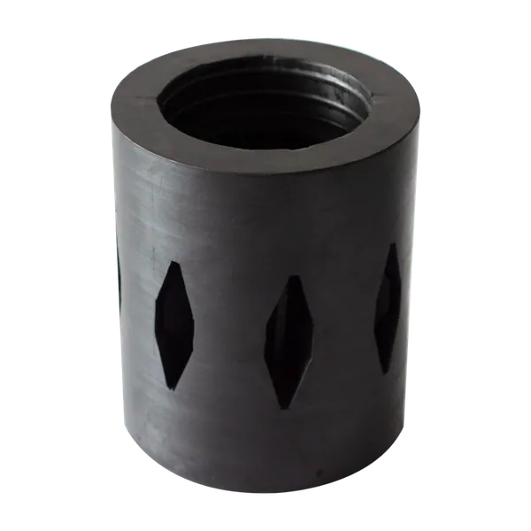
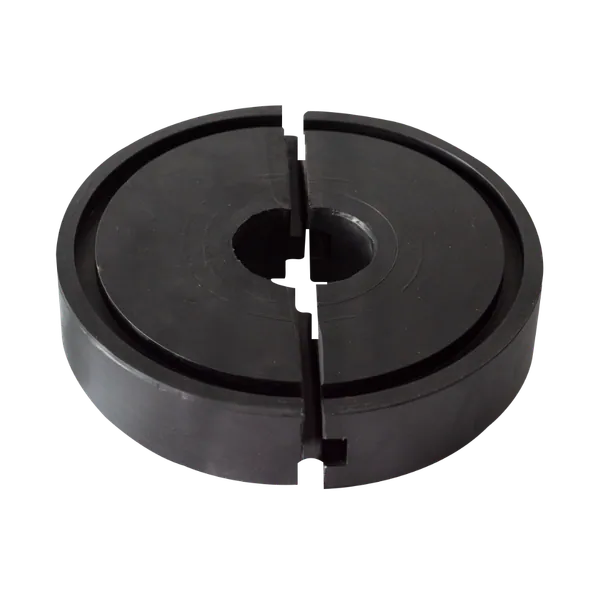
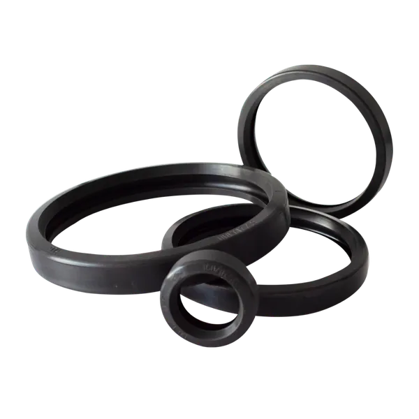
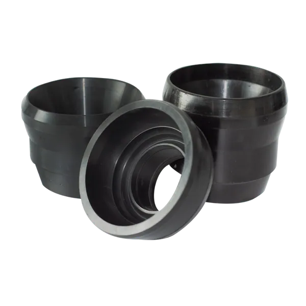

Workover & Well Control
Los componentes de esta línea son elementos de seguridad primaria en operaciones de workover y control de pozo. Trabajan bajo las condiciones más críticas de la industria — presiones de hasta 15,000 PSI, presencia de H₂S y CO₂, y temperaturas HPHT — donde la falla de un sello puede tener consecuencias operativas y ambientales de gran magnitud.

BOP Seals
Sellos para preventores de reventones. Elemento de seguridad primaria en perforación, completamiento y workover.

BOP Rams — Ratigan Style
Carneros elastoméricos para ram BOPs. Compatible con múltiples fabricantes bajo el estilo Ratigan.

Rod Wipers
Limpiadores de varilla o tubería para eliminar fluidos y sólidos durante las maniobras de workover.

Regan Rubber Packer Element
Elemento de sellado para preventores de vástago tipo Regan. Ampliamente usado en pozos con bombeo mecánico.

Packing Mud Bucket
Copa partida para recolección de fluidos de retorno alrededor de la tubería en piso de taladro.

Victaulic Style Gaskets
Juntas para acoples ranurados de instalación rápida en sistemas de tuberías de superficie.

Packer Elements
Elementos de sellado para empacadores de fondo de pozo. Aislamiento zonal en revestimiento bajo alta presión.

Packer Cups
Sellos de copa direccional para swabbing, pruebas de integridad y estimulación química en pozo.